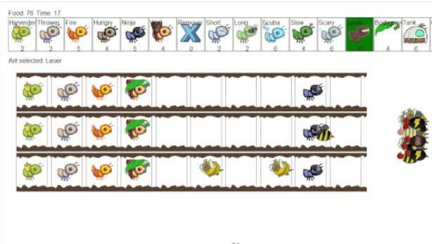
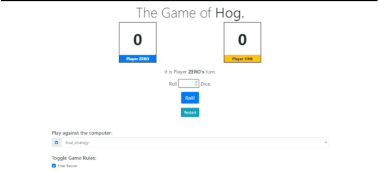
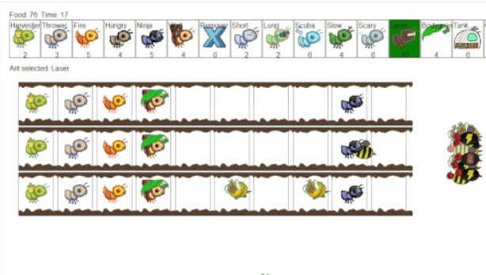
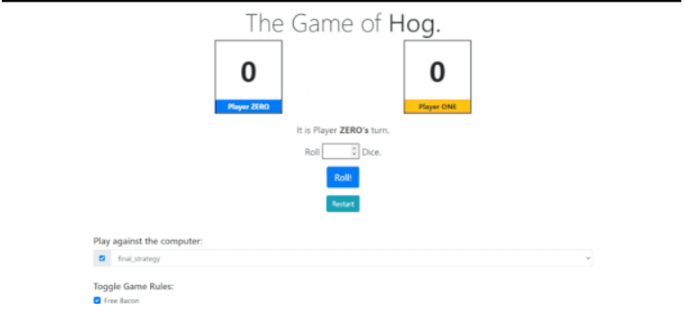

This project models space using Newton's laws of gravitation and can simular orbitting bodies.
I also created an interactive game that I detail
here.
In this game the user controls the space ship and has to destroy all the planets to win, but if the space ship is destroyed you lose.


 


